表面积是指物体所有面的面积总和，无论规则还是不规则的物体都有表面积，包括它所有表面的面积。现阶段我们只讨论长方体与正方体的表面积。
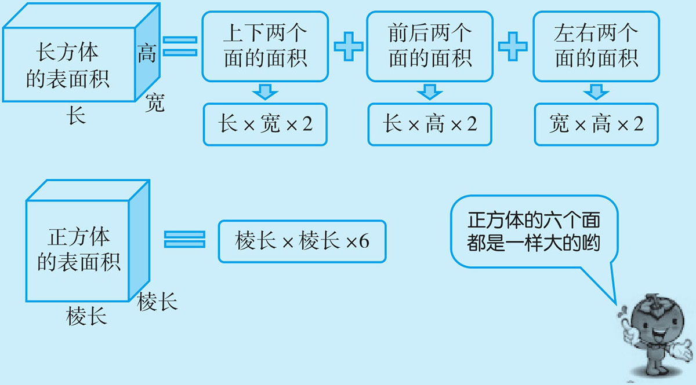
例1 你能画出长方体与正方体的展开图吗？（或什么样的图形可以折叠成长方体与正方体？）
长方体展开后形式要简单一些，主要是要分清它相对面的特征，因为它的面大小是有区别的；而正方体展开后形式多样，它的所有面完全一样，很难分清它相对的面，造成视觉上的混淆。
（1）长方体
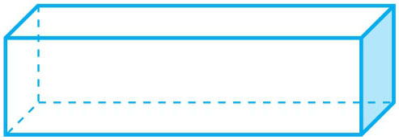
①横着展开
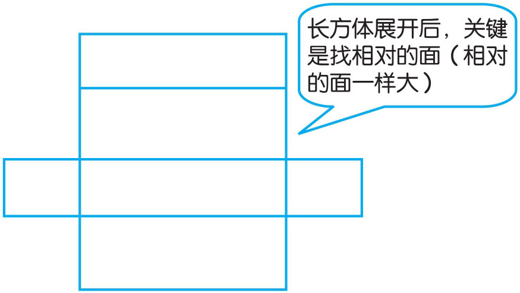
②竖着展开
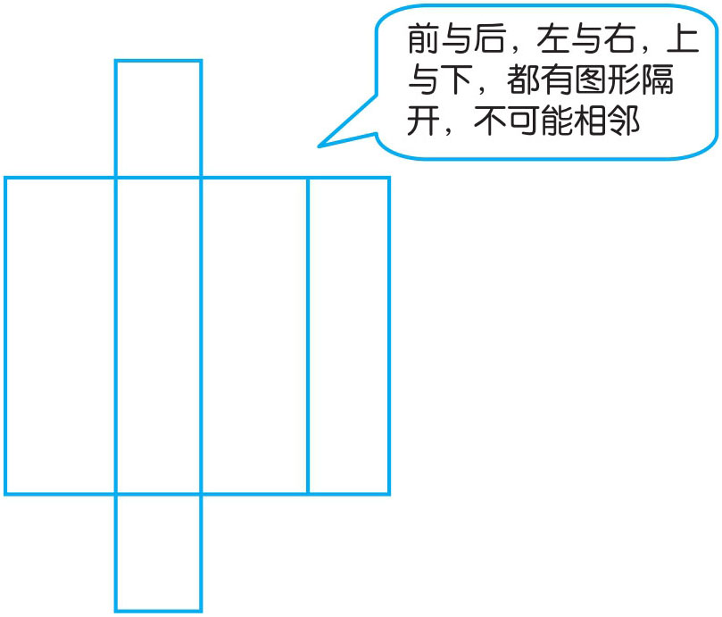
（2）正方体
①“1，4，1”形
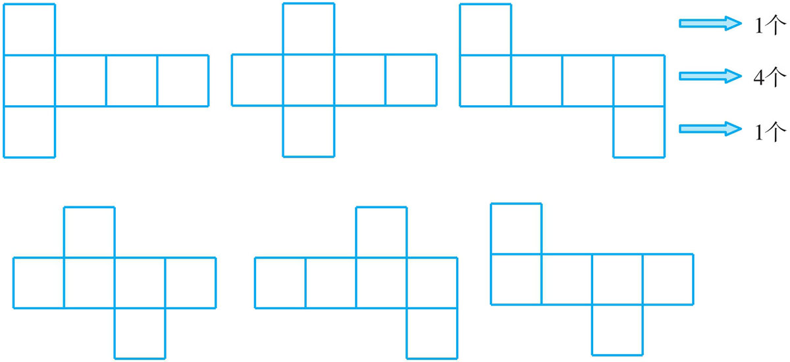
注：凡是上下各1个，中间四个正方形的展开图都可以折叠成正方体。
②“2，3，1”形
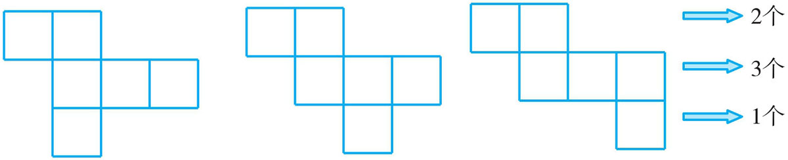
注：上面的“2”不能与中间的正方形完全相对，必须有一个正方形对到中间三个正方形之外。
③“2，2，2”形
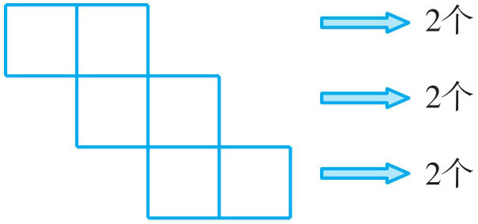
注：“2，2，2”形的展开图只有此一种，不能两两相对，只能错开相对。
例2 一个污水处理厂要建4个大型的污水处理池（无盖），每个池长30米，宽8米，深4米。问：（1）4个处理池的占地面积是多大？（2）如果要在四周和底面抹水泥，抹水泥的面积是多少平方米？（3）全部蓄满水，能装多少立方米？
（1）
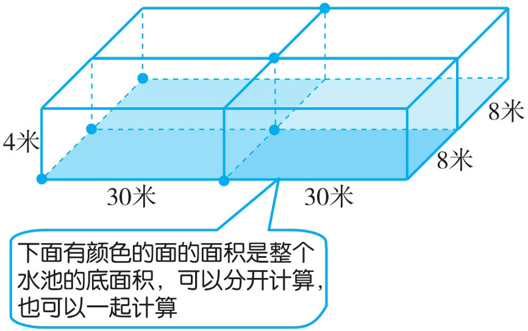
注：底面积＝一个底面积×4或把它看作长60米，宽16米的大长方形（四个水池也可能有其他摆法）。
（2）
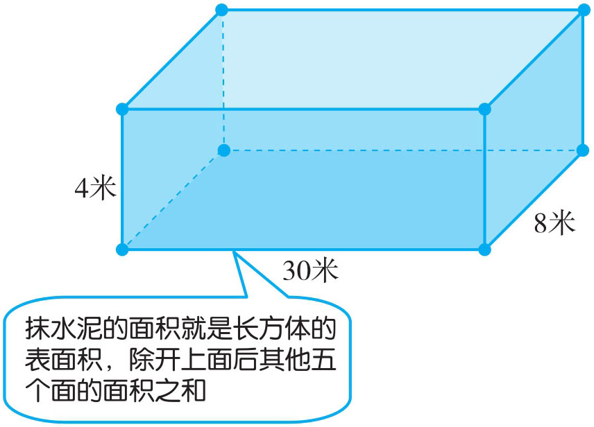
（3）求水池蓄水多少立方米，实际是求体积，体积的算法较容易，它与有无盖子没有关系。可以用一个蓄水池的体积×4。
（1）方法一：占地面积：30×8×4=960（平方米）
方法二：占地面积：(30×2)×(8×2)=60×16=960（平方米）
（2）抹水泥面积（表面积）：(30×4×2+8×4×2+30×8)×4=(240+64+240)×4=544×4=2176（平方米）
（3）蓄水总量：30×8×4=960×4=3840（立方米）
答：4个处理池的占地面积是960平方米；抹水泥的面积是2176平方米；全部蓄满水，能装水3840立方米。
例3 将一个长方体长12厘米，宽4厘米，高4厘米分割成三个一样大的正方体，三个小正方体总表面积比原长方体增加了多少平方厘米？总体积有无变化？
正方体可以理解成长、宽、高均相等的长方体，宽和高都为4厘米，将长12厘米平均分成三等份，就构成棱长为4厘米的三个小正方体。分成三个小正方体后，从剖开的地方就会多出四个面，也即是总的表面积比原长方体增加的面积；然而体积没有增加也没有切掉，所以体积不变。图解如下：
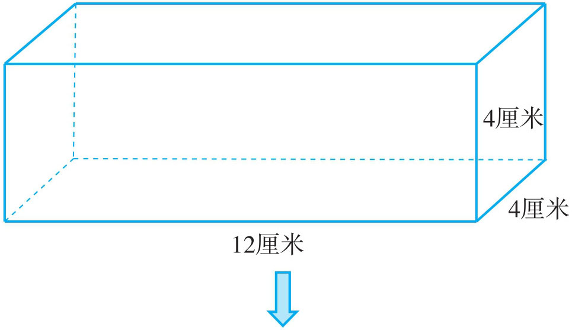
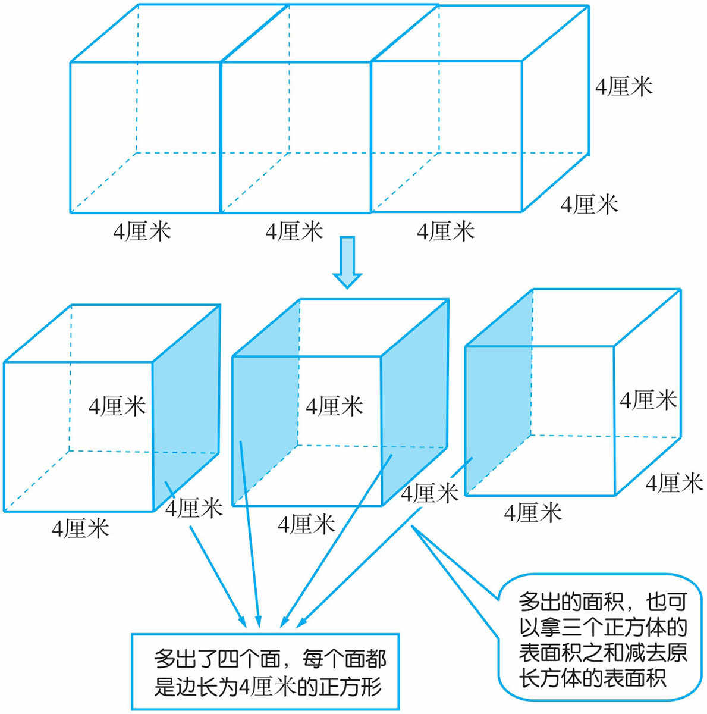
注：长方体（包括所有的立体图形）无论怎么切割，前后的体积都不会发生变化。
原长方体的表面积：(12×4+12×4+4×4)×2=112×2=224（平方厘米）
三个小正方体的表面积之和：4×4×6×3=16×6×3=288（平方厘米）
增加的表面积：288-224=64（平方厘米）
［增加的表面积还可用：4×4×4=64（平方厘米）］
原长方体的体积：12×4×4=192（立方厘米）
三个小正方体的体积之和：4×4×4×3=192（立方厘米）
答：分成后的三个小正方体的总表面积比原长方体增加了64平方厘米；体积前后不变。
例4 下图是27个小正方体拼成的大正方体，把它的表面全部涂上颜色，请想一想：
（1）没有涂到颜色的小正方体有多少块？
（2）一面涂色的小正方体有多少块？
（3）两面涂色的小正方体有多少块？
（4）三面涂色的小正方体有多少块？
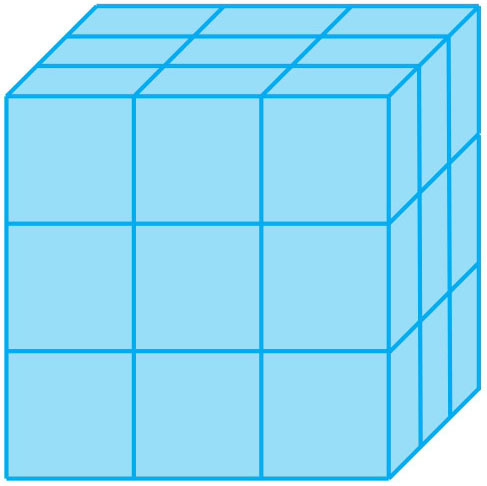
一面涂色：
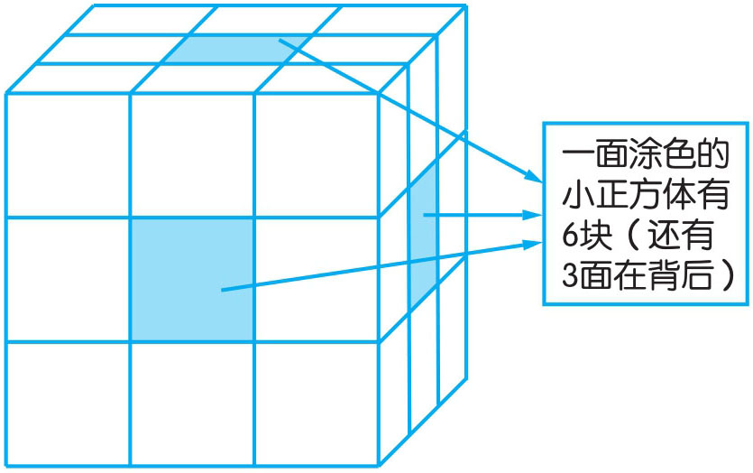
两面涂色：
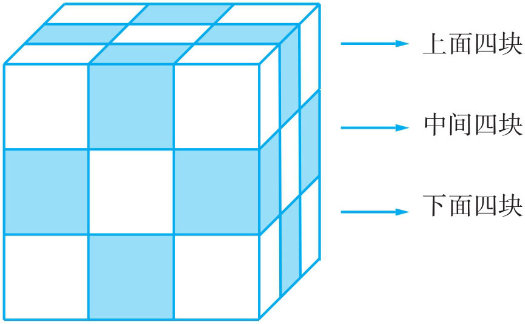
注：可按每大面4块计算，这样重复计算了一次，再除以2。
算式为4×6÷2=12（块）
三面涂色：
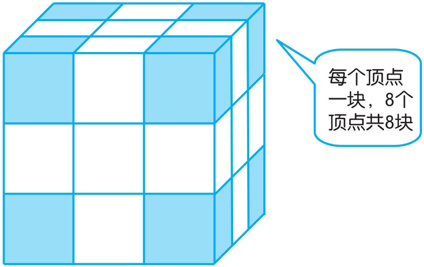
没有涂色的块数＝总块数-（涂一面块数＋涂二面块数＋涂三面块数）=27-(6+12+8)=27-26=1（块）
（1）没有涂到颜色的小正方体有1块。
（2）一面涂色的小正方体有6块。
（3）两面涂色的小正方体有12块。
（4）三面涂色的小正方体有8块。
例5 一个棱长为10厘米的正方体，从上面截去一段，表面积减少了100平方厘米，剩下一段的体积是多少立方厘米？
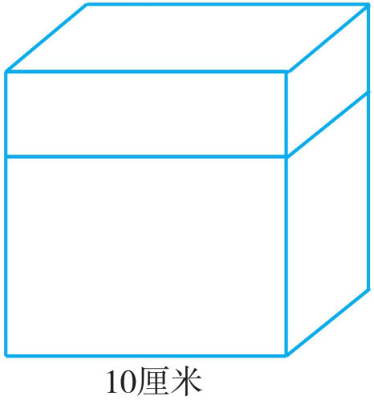
根据题意要求剩下一段（长方体）的体积，得找到剩下长方体的高，题中告诉了截去一段后表面积减少100平方厘米，而减少的面积展开后实际是一个长方形，据此求出长方形的宽，也就是截去长方体的高，由此算出剩下长方体的体积。图解如下：
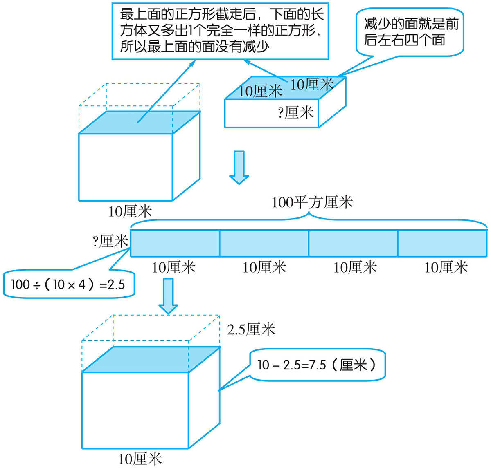
截去的长方体的高：100÷(10×4)=2.5（厘米）
剩下长方体的高：10-2.5=7.5（厘米）
剩下长方体的体积：10×10×7.5=750（立方厘米）
答：剩下长方体的体积是750立方厘米。
例6 用125个棱长为1厘米的正方体拼成一个棱长为5厘米的正方体，要使拼成的正方体的棱长变成6厘米，则需要增加棱长为1厘米的正方体多少个？
125个小正方体拼成棱长为5的大正方体，它们之间的关系可简化为5×5×5=125，也即是说个数等于长、宽、高的乘积。则拼成棱长为6的正方体，总个数即为6×6×6，再减去原来的个数，就为增加的个数。图解如下：
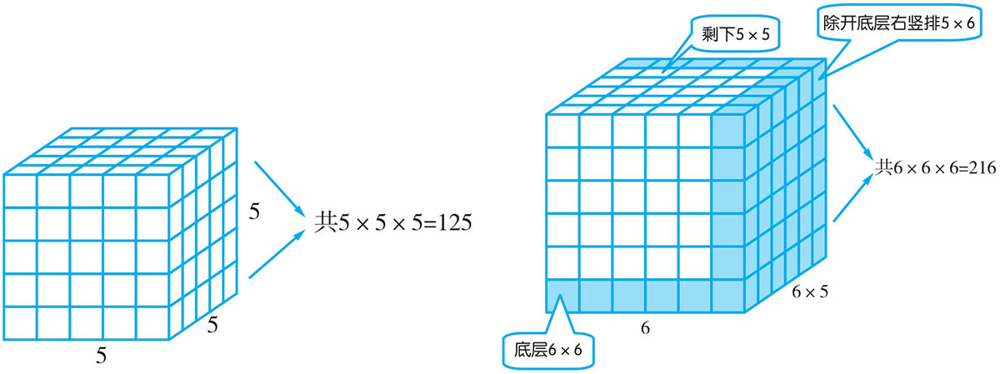
方法一：6×6×6-5×5×5=216-125=91（个）
答：需要增加棱长为1厘米的正方体有91个。
方法二：6×6+5×6+5×5=36+30+25=91（个）
答：需要增加棱长为1厘米的正方体91个。
1．下面是长方体与正方体的展开图，请你根据已经标上的方位，填上其他几个面的方位名称。（前、后、左、右、上、下）
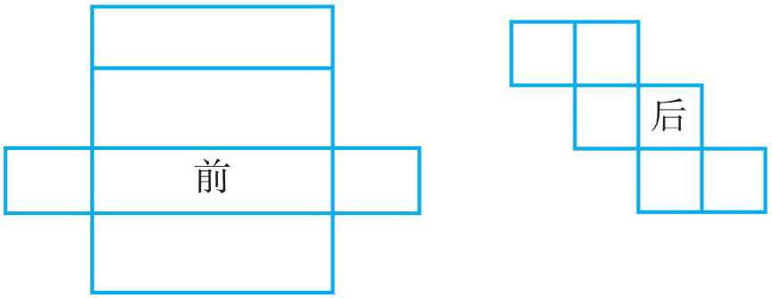
2．在一个长方体的一个角上截去一个棱长为3厘米的正方体。剩下物体的表面积与体积各是多少？
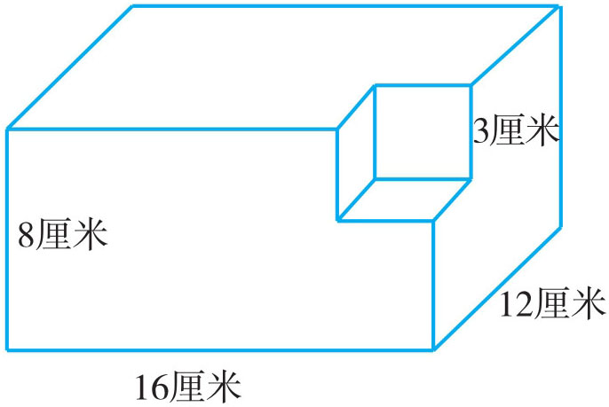
3．将3个棱长为6厘米的正方体按如图所示方法搭到一起，求搭成后图形的表面积与体积。
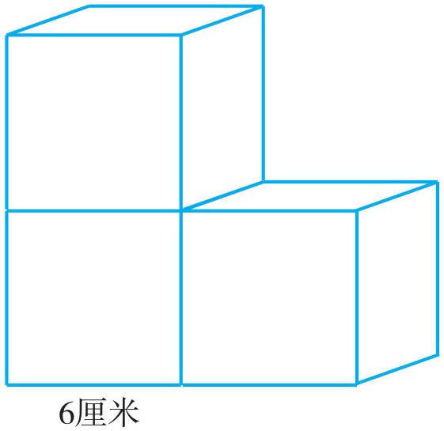
4．一个长方体，如果长增加2厘米，宽、高不变；或者宽增加3厘米，长、高不变；或者高增加5厘米，长、宽不变，它的体积都增加30立方厘米。这个长方体原来的体积是多少立方厘米？
5．一块长方形的纸板，长50厘米，宽40厘米，在纸板的四个角分别剪去边长为5厘米的正方形，然后折起来拼成一个无盖的长方体纸盒。这个纸盒的表面积是多少平方厘米？容积是多少升？
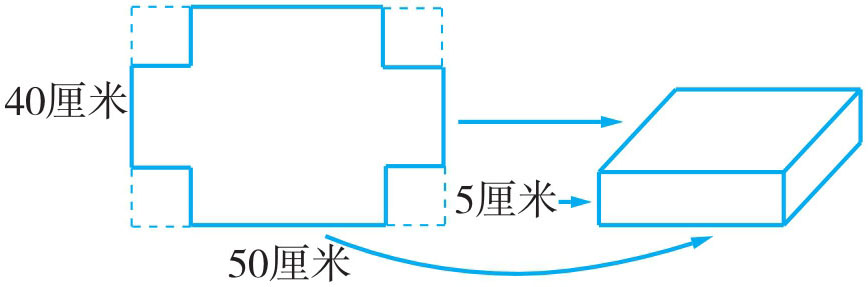
6．一块正方体的花岗石，棱长为30厘米。将它横竖从中割开（如下图），它的表面积增加了多少平方厘米？
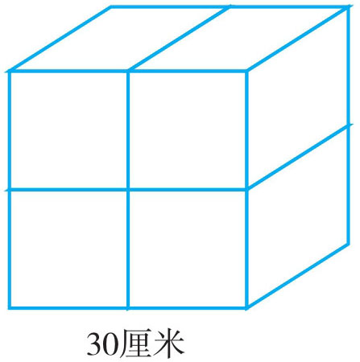
7．有4块同样长25厘米、宽10厘米、高6厘米的长方体砖。堆成一个大长方体，面积最大为多少平方厘米，最小为多少平方厘米？
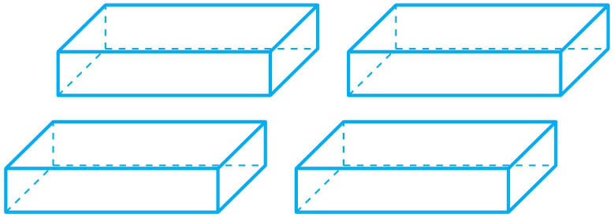
8．有一个长5厘米，宽4厘米，高3厘米的长方体，将它的表面全部涂上绿色油漆，然后把它切割成棱长为1厘米的小正方体，则任何一面都没有被刷漆的小正方体有多少个？
9．下图是由7个棱长为2厘米的小正方体搭成的，这个立体图形的表面积是多少平方厘米？
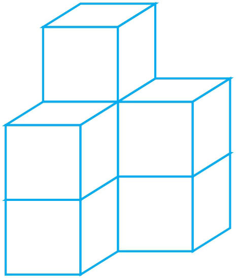